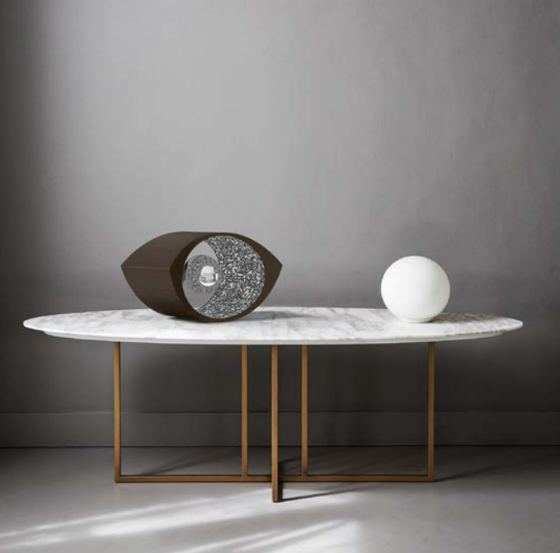

Schedadal file lampada.stp
larghezza300mm
altezza195mm
profondità200mm
sferaØ 90mm
corpoNoce
sferaCromo
parti4
premio1° Pending Cultures
Immaginirender dal portfolio


Processocosa c’è e cosa manca
01Schizzida fornire
02Modello Rhinolampada.stp ✓
03Render Vitrumda fare insieme
Prossimo progetto — 10 / 10→
La Fornace →